Sarah Allen, Laszlo Systems
XML is well-suited to GUI development. With an appropriate set of primitives, it can provide the familiar feel of a markup language while enabling the broad range of capabilities required for application development. Its declarative approach removes a lot of unnecessary procedural code. It simplifies the programmer's task of creating the initial structure of an application, facilitating prototyping and flexible design. Declarative programming is effective for frequently used elements and patterns, and can be combined with scripting to allow procedural code for specific tasks.
XML provides a hierarchical structure which is effective for layout as well as for encapsulating various logical states of an application. It is also convenient to work with a concise textual representation of the application. In contrast to binary formats or the verbose code of traditional GUI programming in Java or C++, XML files are easy to work with. Text files work easily with standard tools, such as revision control systems, facilitating the development of applications by both individuals and teams.
Like HTML, XML also supports the separation of assets created by graphic artists from the files that contain application code. By including references to external resources in XML an application specification, the people who develop the application and interaction logic can work effectively with the people who create graphic elements and other media.
XML UI languages are commonly used to accelerate and simplify development and distribution of desktop-like applications. Languages like XUL and XWT encapsulate the set of Windows UI elements, and the ability to rapidly assemble a Windows-like Web application using XML is valuable and has many advantages over building a similar application in Visual Basic, let alone MFC or Swing.
Unfortunately, using XML as a way to assemble interactive components that are defined using classic GUI toolkits leads to homogeneity and artificial simplicity, and does not reflect the diversity of today's Web.
Here's a selection of eight commercial web sites:
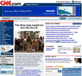 |
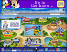 |
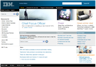 |
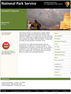 |
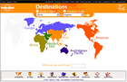 |
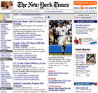 |
What do they have in common? graphics, text, hyperlinks. The appearance, layout, navigation – in other words, the user experience – is unique to each. From a design perspective, they have more in common with their offline counterparts than with each other.
HTML, perhaps inadvertently, provides the ability to create custom presentations of information with a visual design that may be unique to the document. The same flexibility is now required for interaction design. Like it or not – and many UI specialists don't – the Web is a varied, diverse place, where the lines between application functionality, content, and branding are already blurred and becoming more so over time. Even desktop operating systems are morphing, becoming more graphical and media-like. The age of standardized, rule-based UI design – "any color you like, as long as it's black" – is coming to an end, and the underlying systems need to take this into account.
If an XML UI language is to have any relevance to the evolution of UI on the Web, it will have to embrace this diversity rather than try to stifle it. Usability experts often claim that "different" user experiences are confusing. The Web proves that different designs aren't necessarily confusing – bad designs are confusing. Look and feel should not be mandated. It must be driven by the needs and desires of its audience, not only by technologists. What technologists can offer in this evolution is a better way to create, structure, and maintain diverse interactive experiences.
Freedom of expression is essential for a UI markup language. But this doesn’t mean it shouldn’t be systematized – any particular user experience will have its component parts and representative behaviors. Homogenous design need not be the logical consequence of using structured XML for application development.
A platform for web applications must provide standard UI components for application developers to be productive in assembling standard application elements; however, those components must be examples of what is possible in the environment, rather than the extent of what is possible. When the UI components are implemented natively in the environment, it ensures that the platform has sufficient flexibility and power to create arbitrary UI controls and support innovative design.
"Skinning" and styling are effective ways of providing minimal changes in appearance to match the color schemes and texture, but the UI framework must also provide mechanism for changing how a component works or developing a new component entirely. For example, a developer must be able to create a button or window with a unique look and feel.
It is insufficient for XML to merely allow the composition of components that are defined using an external procedural language. Such an architecture limits the creative flexibility of the user presentation. The XML language must provide lower-level mechanisms such as: views, keyboard and mouse input, focus, modality, events, layout, animation, media, constraints, and data-binding. Developers need the ability to combine these lower-level capabilities into higher level components. Any frequently used application element must be able to be represented as a tag. To create tags, developers should be able to write declarative XML and not need to resort to “code-behind” or similar approach where they must create the element using entirely procedural code.
Application development (component assembly) and component development are not distinct activities to be undertaken by different personnel. Developers end up doing both, so the transition between the two should be fluid.
Providing very basic building blocks and the ability the combine those into higher level abstractions enables the production of a highly branded user experience. Businesses and individuals publishing today’s web applications value the ability to establish a unique identity in their web presence. Just as a consumer appliances appear in different form-factors with unique knobs and dials, so must the software applications that are available on the web.
Laszlo’s XML application language, LZX, offers these capabilities. The following screenshots are taken from applications implemented in LZX. These examples illustrate how applications are adapted for various target audiences, ranging from desktop UI to highly branded user experience.
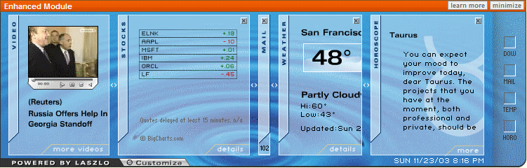
Example A: Earthlink Personal Start Page, column layout: users may resize columns by dragging. When columns are resized the information inside is arranged to fit. In small sizes, summary information is displayed.
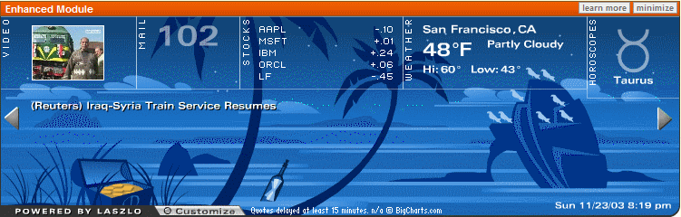
Example B: Earthlink Personal Start Page, panoramic layout, tropical theme: the same data is displayed as in example A, including "ambient" data. The message in the bottle represents that the user has new mail. The treasure in the chest indicates that the stock market is up.
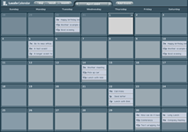 |
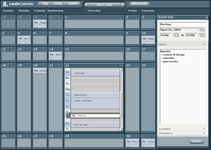 |
Example C: This calendar application uses very few standard UI components. Above are two different states of the app. Click on a day shows the details in place with a smooth transition between the two visual states. Choosing to create a new event causes the panel on the right to slide in.
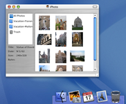 |
||
| Example D: This contacts application provides a look and feel that matches the Windows OS. | Example E: This photo application provides a look and feel that matches the Mac OS, including a functioning “dock” to switch to other applications. |
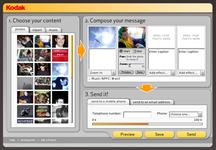
Example F: A highly branded photo sharing application. Note the custom scrollbar with its thumb colored to match the corporate brand. This application combines standard UI elements, such as combobox, button, radio, slider and tabs, along with custom UI to display photos and music lists.